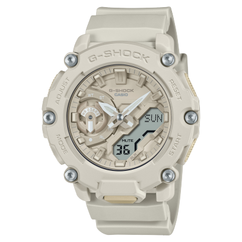
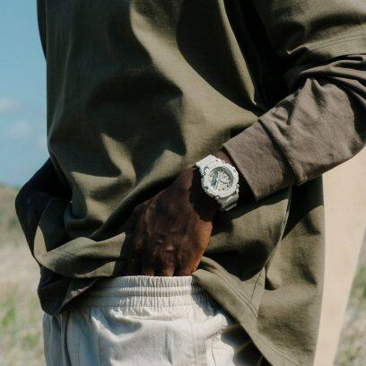

ANALOG-DIGITAL 2200 SERIES GA-2200NC-7A


ANALOG-DIGITAL 2200 SERIES GA-2200FF-8A
The G-Shock Classic is an iconic watch, known for its shock resistance and rugged design. It was first introduced in 1983 by Casio and has since become a symbol of durability. Designed to survive falls and rough handling, the G-Shock is popular among military personnel, sports enthusiasts, and adventurers. Its water resistance, multiple functions such as stopwatch and alarm, and long battery life make it a highly reliable timepiece.